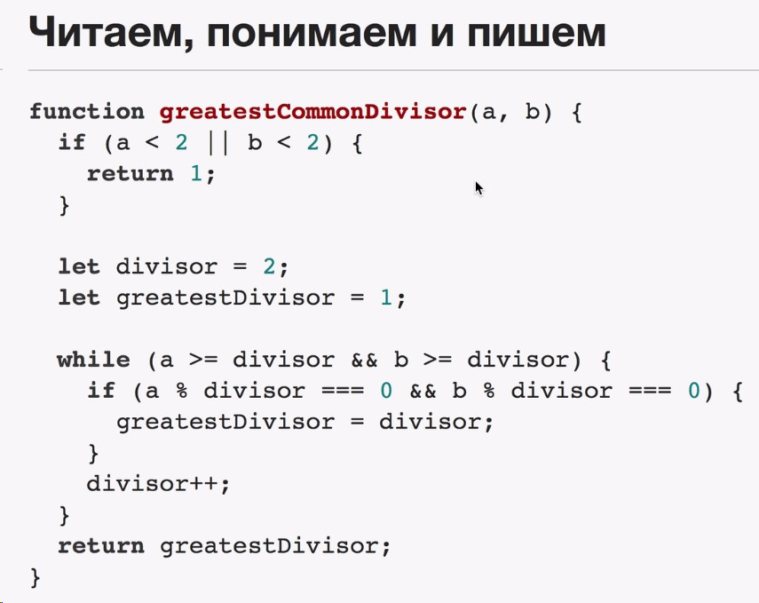
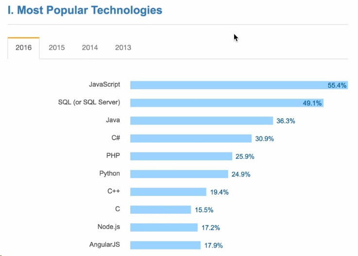

Что освоим в курсе

Что входит в основы программирования
Язык программирования
Синтаксис - набор правил, описывающий комбинации символов алфавита, считающиеся правильно структурированной программой.
Семантика - смысл, заложенный в синтаксические конструкции. Правильная синтаксически написанная программа может быть полным бредом.
Вычислительные процессы
Вычисление - основа всего в разработке. Преобразование некой задачи в некий вычислительный процесс - программирование.
Построение абстракций
С ростом программы растет сложность программы. Поддержка кода, его модульность и способность к изменению выходит на первый план после определенного размера программы.
Построение абстракций - возможность из мелких деталей программы делать крупные. В дальнейшем оперировать только крупными.
Отладка
Способность найти ошибки и отладить. Скорость разработки напрямую зависит от скорости отладки.
Производительность разработчиков может различасться в десятки раз. Эту разницу в большой степени определяет скорость в отладке.
Какой выбрать язык программирования
Последний опрос на stackoverflow

JS - язык, используемый на различных платформах, на fronend, на backend; во встраиваемых устройствах. Почти во всех проектах используется как дополнительный.
Самое главное - после обучения можно сразу использовать.
В курсе
* минимально необходимый синстаксис
* основные строительные блоки
* построение вычислительных процессов
* основы создания абстракций
* отладка кода